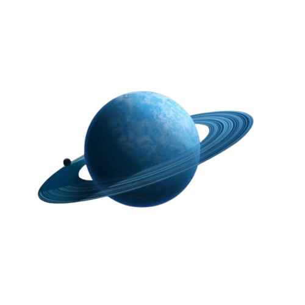

Celestials

Uranus's Info
Uranus is the seventh planet from the Sun and one of the most unique planets in the Solar System due to its
extreme axial tilt. Unlike other planets, Uranus rotates on its side, with an axial tilt of about 98 degrees,
causing it to appear as if it is rolling along its orbit. It is classified as an ice giant and is mainly
composed of water, ammonia, and methane ices, along with hydrogen and helium gases. The presence of methane
in its atmosphere absorbs red light and gives Uranus its distinctive blue-green color. Uranus has a faint
ring system and a cold, windy atmosphere with cloud layers and storms.
Uranus is one of the coldest planets in the Solar System, with minimum atmospheric temperatures dropping to
around −224°C. A single day on Uranus lasts about 17 hours, while one complete orbit around the Sun takes
roughly 84 Earth years. Because of its sideways rotation, each pole experiences about 42 years of continuous
sunlight followed by 42 years of darkness. Uranus has 27 known moons, most of which are named after
characters from the works of William Shakespeare and Alexander Pope. Studying Uranus helps scientists
understand the structure, climate, and evolution of ice giant planets.
These are some of the following 13 interesting factual points about the "planet_Uranus"
- Uranus is the seventh planet from the Sun.
- It is classified as an ice giant, not a gas giant.
- Uranus has an extreme axial tilt of about 98°, causing it to rotate on its side.
- The planet appears blue-green due to methane in its atmosphere.
- Uranus is the coldest planet in the Solar System.
- A single day on Uranus lasts about 17 Earth hours.
- One full orbit around the Sun takes 84 Earth years.
- Uranus has a faint ring system made of dark particles.
- It has 27 known moons.
- Most of its moons are named after Shakespearean characters.
- Uranus was the first planet discovered using a telescope.
- It was discovered by William Herschel in 1781.
- Uranus experiences extreme seasonal changes due to its sideways rotation.